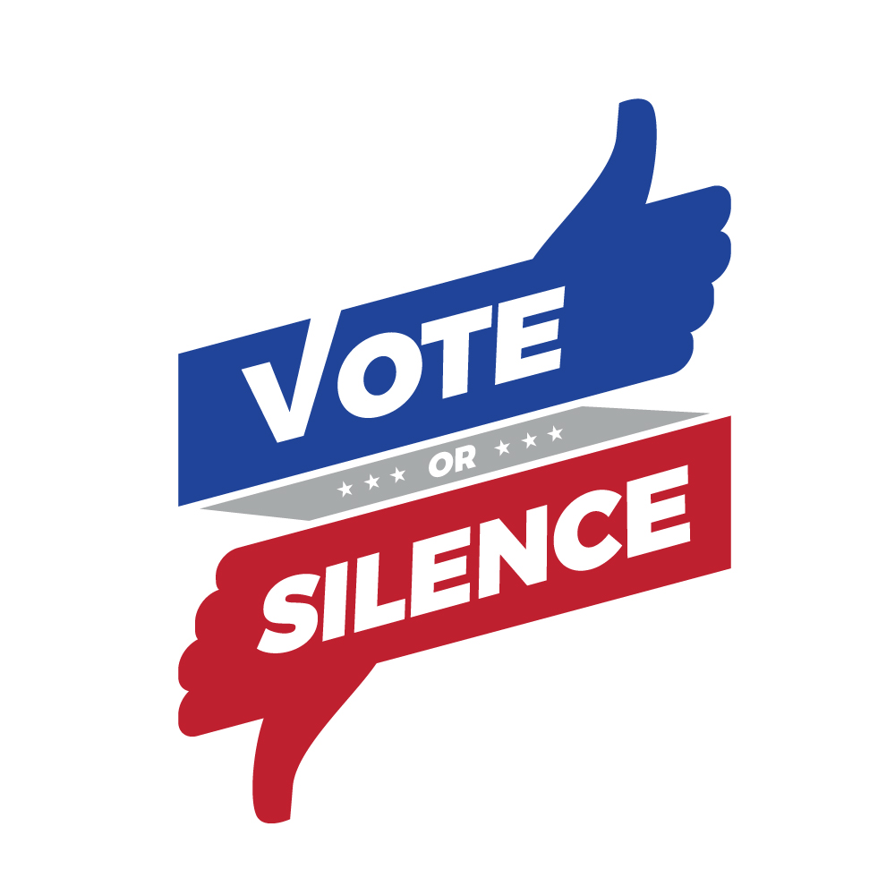

vote or silence
If your friends don't vote - never speak to them again.
"I'm joining the #voteorsilence movement! This means I pledge to vote in the #midterm elections and if any of my friends don't, I won't speak to them again. I nominate ___ and ___ to make a video just like this one. Good friends don't just show up to our birthdays - they also show up to vote 🇺🇸"
Say it with a selfie 🗣🤳👍
Now that you've joined the movement make sure to:
- Register to Vote ASAP
- Double check you are still registered (some states have purged voting records)
- Check if your friends voted
N.B. There are a lot of people with exceptional circumstances who are unable to vote even though they want to. This movement is targeting all your friends who can vote but choose not to.
Creator's notes:
With luck, this will be the Ice Bucket Challenge of voter turnout. The Harlem Shake of election news. The Tide Pod Challenge of political activism. This election season let's try a different way to increase voter turnout. Let's try using peer pressure. I know you are passionate about influencing our modern political agenda and our elected representatives. Be brave! Take a stand on this issue with your friends. If they don't vote, that's a dealbreaker for your friendship. #VOTEORSILENCE